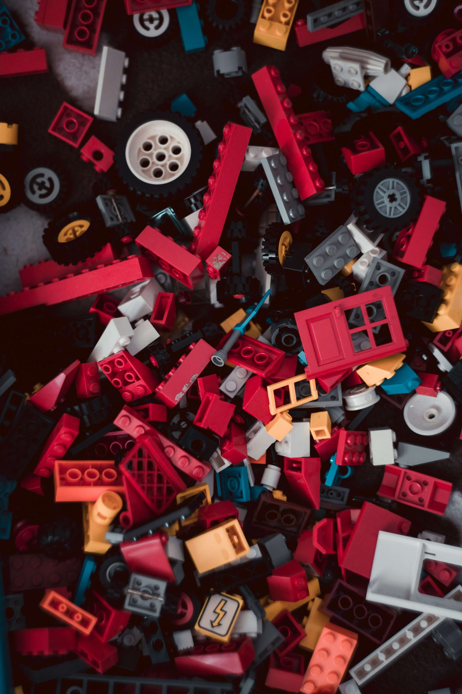
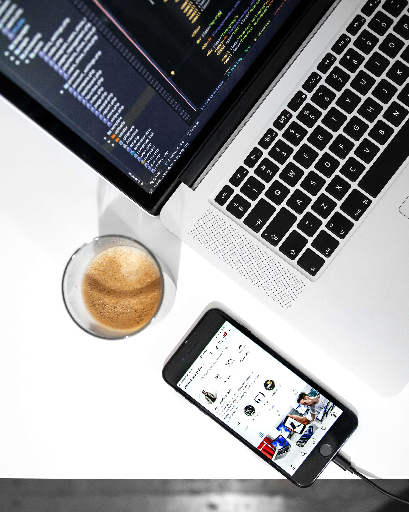
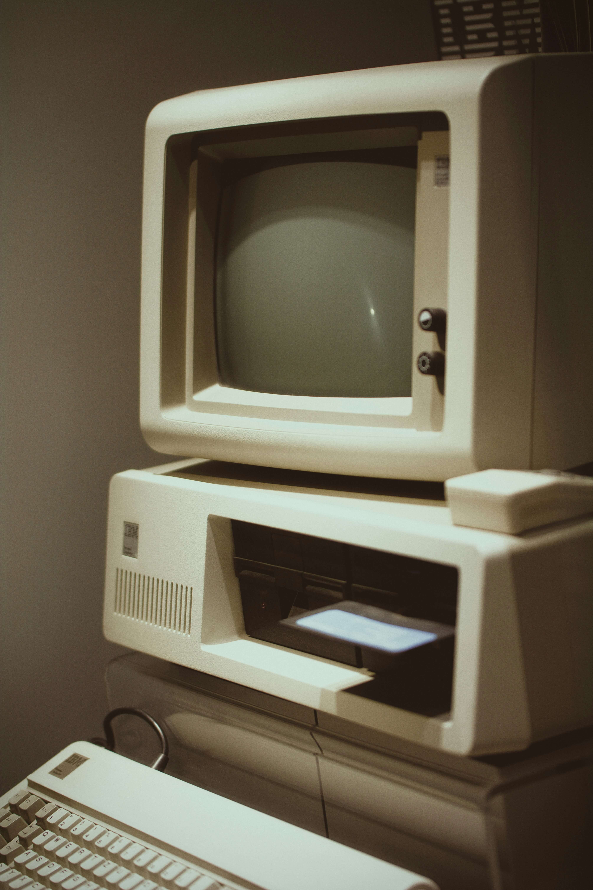
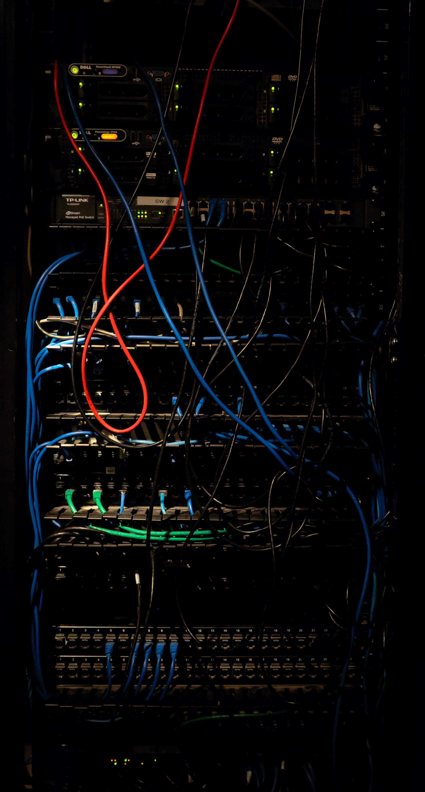

Это было самое начало пути. На этом этапе важно было проникнуться основами и настроиться на учёбу. И, возможно, подумать, как новые знания могут повлиять на ваше будущее.
Начало обучения у меня ассоциируется с воодушевлением. Пройдя пробную часть курса, ко мне пришло осознание того, что мне искренне нравится то, чем я занимаюсь. Это наполнило меня энергией продолжать учиться и внимательно изучать материал.
1 спринт: Я — чистый лист
</интерес>
На первых этапах мы работали со страхами и сомнениями, которые часто испытывают новички. Один из них — страх перед чистым листом. Это, конечно же, намного сложнее, чем боязнь куска бумаги. Часто за этим ощущением скрываются более глубокие вопросы: с чего начать? а вдруг будет слишком сложно? что, если я не справлюсь?
Первый спринт был наполнен множеством интересных тем. Я прошел теорию очень быстро, я был движим энтузиазмом и заинтересованностью к новым темам.
1 спринт: А если не получится?

</конструктор>
Первый проект — позади! Но это всё ещё самое начало пути. Радость могла быстро померкнуть и смениться ожиданием провала. Или вы, наоборот, могли вдохновиться успехами и поверить в себя.
Завершая первый спринт, я поймал себя на мысли: "Я это сделал САМ!" Даже простой лендинг казался шедевром. Особенно тронуло, когда ревьюер похвалил мою работу — эти слова дали невероятную мотивацию двигаться дальше.
2 спринт: Погоня за идеалом

</кастомизация>
На этом этапе вы уже достаточно разбирались в основах вёрстки, чтобы понять, как много ещё впереди. Вы могли попытаться погнаться за идеалом и понять, что он недостижим. А, может, вы вовсе и не подвержены перфекционизму и вместо того, чтобы сделать идеально, старались просто сделать.
Начало второго спринта ознакомило меня со стилизацией форм — казалось бы, что может быть скучнее? Но когда я впервые превратил стандартный <input> в элегантное поле с кастомными плейсхолдерами и чекбоксами, это стало откровением!
2 спринт: О тех, кто рядом
</поддержка>
Всё это время вы были не одиноки (хотя, возможно, иногда и чувствовали, что одни против целого мира). Вас окружали одногруппники, команда сопровождения и просто близкие люди, которым можно пожаловаться, если очередной макет просто так не поддавался. Осваивать что-то новое легче, когда рядом есть единомышленники, не правда ли?
Во время выполнения проектной работы мне очень помогали советы нашего наставника Юрия, без него я бы не справился с кастомизацией форм и сложной grid-сеткой. Самым главным в его рекомендациях были не ответы, а система мышления, как самому прийти к ответу — и это ценнее готового кода.
3 спринт: Обходные стратегии

</адаптивность>
На этом курсе вы постоянно решали разные задачи. В какой-то момент вам могло показаться, что решения просто иссякли. Значит, пришло время посмотреть на задачу под другим углом.
Каждый новый брейкпоинт — как ключ к новой реальности. Но вместе с этим пришло и жутковатое осознание: идеального макета не существует. Ты уже не просто пишешь код, ты пытаешься предугадать бесконечное разнообразие экранов, браузеров и устройств.
3 спринт: Когда опускаются руки
</достижение>
Во время учёбы часто возникает чувство, когда не знаешь, за что хвататься. Вроде и проектную пора сдавать, и задачи хочется порешать, и в теории получше разобраться, и жизнь не забыть пожить. В такие моменты очень нужна концентрация. Вспомните, откуда вы её черпали.
Эйфория от завершения спринта – это как первый глоток воздуха после долгого нырка. Внезапно понимаешь, что горы, которые казались неприступными, на самом деле – холмы, посильные для покорения.
«Сейчас я здесь»

</вёрстка>
Сейчас вы уже очень много знаете о вёрстке. Но это только начало. Во-первых, впереди ещё много материала про «красотищу». Во-вторых, с окончанием курса учёба не заканчивается. Вёрстка — это целый мир. И этот мир постоянно меняется. Познать его полностью не получится, но это тот случай, когда важен сам процесс познания. Ведь часто путь — и есть результат.
Сегодня я с удивлением осознаю, что автоматически анализирую вёрстку любых сайтов. Руки сами тянутся к DevTools — хочется разобрать каждый интересный элемент, как когда-то разбирал игрушки в детстве.